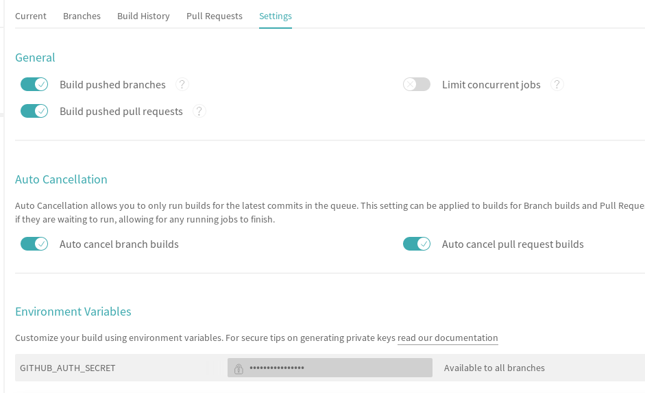

Start
how it began
In this post, I explain how can I deploy this website. The goal is to have a mechanism if CI/CD. I use hugo framework for manage localy content and push it in a github repository.
I follow this Artem Sidorenko’s article which was very useful when you want to use travis-ci as a pipeline worker.
Here were the steps:
Install hugo on your personnal workspace
$ sudo apt-get install hugoCreate the local repository environment
$ mkdir dev/website $ cd dev/website $ git init $ echo "# My super new website" > README.md $ git add README.md $ git commit -m "feat: first commit"Create one repository in github for the hugo website files and the an other one for the public static content file. For this last repository add a generic README.md file to create the master branch. This branch will be used to automaticaly push static content by bot.
Create a robot github account. Github allows to have a machine account (cf github terms of service). this account will be use by travis-ci to commit on public static content repository.
In your local repository, add remote repository references :
$ git add remote origin git@github.com:<username>/<hugo_website_files_repo.git> $ git push origin masterAdd travis-ci file .travis.yml file and the script deploy.sh use to deploy content files.
cat << EOF > .travis.yaml --- install: \- wget -O /tmp/hugo.deb https://github.com/gohugoio/hugo/releases/download/v0.59.1/hugo_extended_0.59.1_Linux-64bit.deb \- sudo dpkg -i /tmp/hugo.deb script: \- hugo deploy: \- provider: script script: bash deploy.sh skip_cleanup: true on: branch: master EOFcat << EOF > deploy.sh #!/bin/bash set -e echo $GITHUB_AUTH_SECRET > ~/.git-credentials && chmod 0600 ~/.git-credentials git config --global credential.helper store git config --global user.email "<machine_account>@users.noreply.github.com" git config --global user.name "<machine_account_name>" git config --global push.default simple rm -rf deployment git clone -b master https://github.com/<username>/<public_static_website_files_repo.git> deployment rsync -av --delete --exclude ".git" public/ deployment cd deployment git add -A # we need the || true, as sometimes you do not have any content changes # and git woundn't commit and you don't want to break the CI because of that git commit -m "rebuilding site on `date`, commit ${TRAVIS_COMMIT} and job ${TRAVIS_JOB_NUMBER}" || true git push cd .. rm -rf deployment EOFAdd job in travis-ci in logining with github authentication

Share this post
Twitter
Google+
Facebook
Reddit
LinkedIn
StumbleUpon
Pinterest
Email